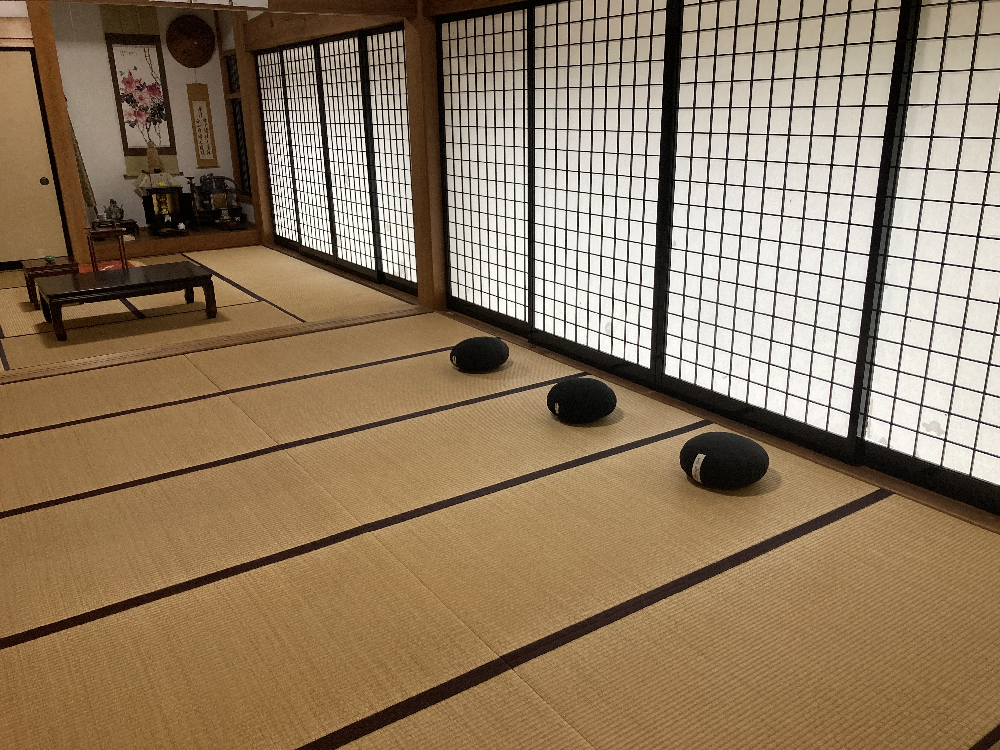
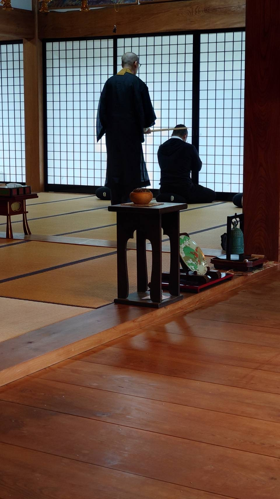
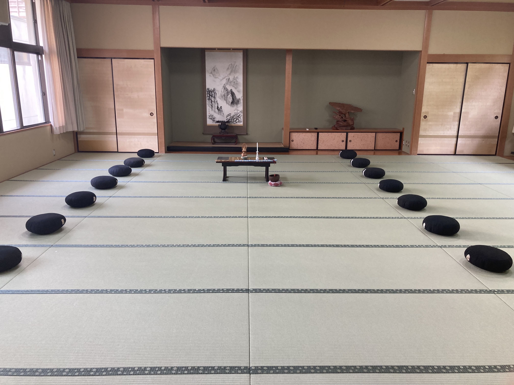
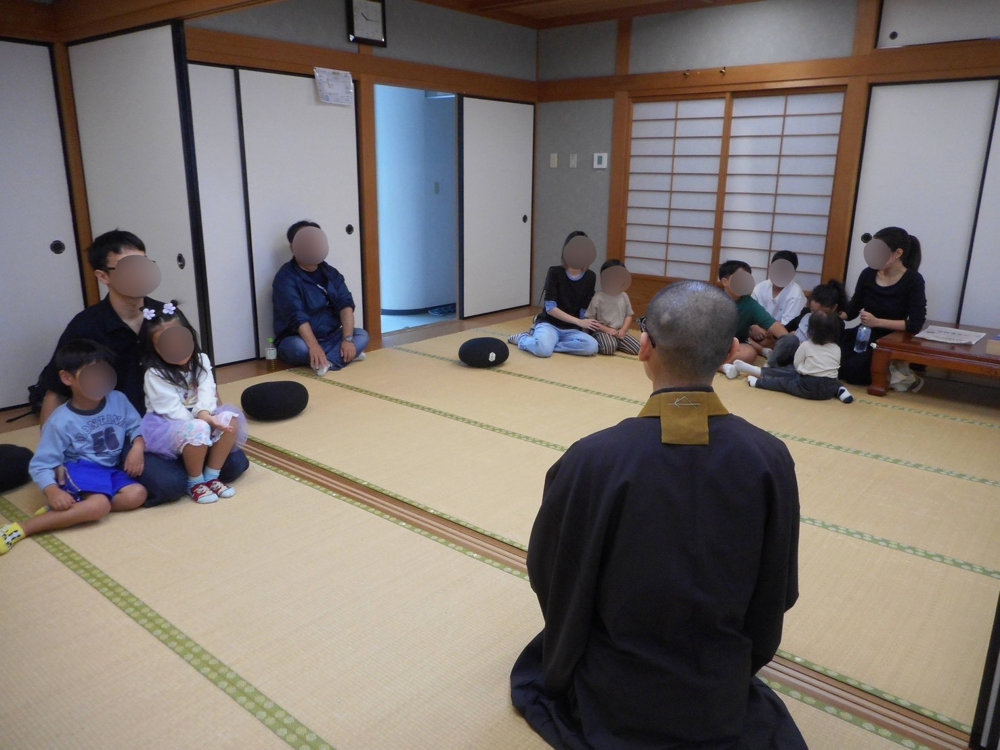
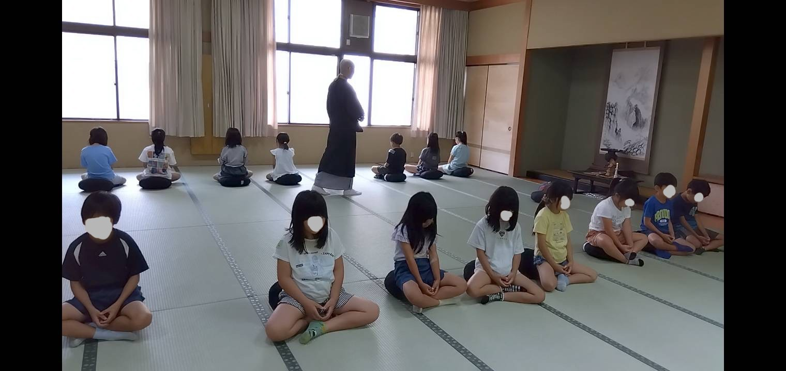

Chozenji Temple, Takashima, Shiga
Beginner-Friendly Zazen Experience
Sit quietly, adjust your posture, and bring awareness to your breath.
Spend a calm moment facing yourself in the quiet main hall of Chozenji.
Zazen at Chozenji

Zazen space at Chozenji
Chozenji offers zazen experiences by reservation for people who are new to seated meditation.
Zazen may sound strict or difficult, but this experience is not about forcing yourself to sit for a long time. It is a simple opportunity to adjust your posture, bring awareness to your breathing, and sit quietly in a temple space.
At the beginning, we explain how to sit, how to place your hands, how to keep your posture, and how to breathe. If sitting on the floor is difficult, please ask us about chair seating in advance.
Guided by the Deputy Priest
The zazen experience at Chozenji is guided by the deputy priest, who trained at Eiheiji Monastery for four and a half years.
This is not intended to reproduce full monastic training. Rather, it is a calm experience in which you can spend time adjusting your posture and breath in a quiet temple.
You do not need any prior knowledge of Buddhism or zazen. Please feel free to contact us if you would like to try sitting quietly in a temple, even for the first time.

Guidance on posture and sitting
Recommended For
First-time zazen visitors
You do not need to know the formal rules in advance. We will explain the basics of sitting and breathing step by step.
Those seeking quiet time
You can step away from daily life and spend time settling your body and mind in a quiet temple atmosphere.
Individuals and small groups
Individuals, couples, friends, and small groups are welcome by reservation. The content can be adjusted in advance.
Experience Flow
Reception and guidance to the main hall
After arriving at Chozenji, you will be guided to the main hall. We will briefly explain the overall flow of the experience.
Explanation of posture and breathing
We explain how to sit, where to place your hands, how to keep your posture, and how to breathe in a beginner-friendly way.
Zazen
You will sit quietly for a manageable amount of time. Breaks can be included if needed.
Reflection and temple introduction
After zazen, you may share what you felt or ask questions. A brief introduction to the temple can also be provided upon request.

Adjustable for individuals and groups
Participation
Zazen experiences for individuals and small groups are available by reservation. Please note that we may not be able to accommodate your preferred date due to temple services or other events.
Individual and small-group zazen
- Duration: about 75 to 90 minutes
- Group size: about 1 to 6 people
- Chair seating may be available upon request
- Beginner-friendly guidance is provided
What is included
- Basic explanation of zazen
- Guidance on posture and breathing
- Zazen experience in the main hall
- Time for reflection after the experience
- A brief temple introduction if requested
Chozenji is currently accepting zazen experiences on a trial basis. Since the content may need to be adjusted depending on the number of participants and purpose of the visit, please contact us with your preferred date, number of participants, and purpose.
For inquiries in Japanese, please use the Japanese page.
Before You Join
- Who can join
- First-time zazen visitors, people seeking quiet time, individuals, and small groups.
- Duration
- About 75 to 90 minutes. The length may be adjusted depending on the content and number of participants.
- Number of participants
- Usually about 1 to 6 people. Please contact us in advance for larger groups.
- Reservation
- Please contact us at least 7 days before your preferred date whenever possible.
- Clothing
- Please wear comfortable clothes that are easy to sit and move in. We recommend avoiding tight clothing.
- If sitting on the floor is difficult
- Chair seating may be available. Please let us know in advance.
- Notes
- If you are not feeling well, please do not push yourself and contact us in advance. We may not be able to accommodate your preferred date due to temple services, events, or local activities.
Group and Outreach Inquiries
In addition to zazen experiences at Chozenji, we also accept inquiries about zazen experiences for local groups, welfare-related groups, educational groups, training programs, and exchange events, depending on the content.


Local, welfare, and educational groups
We will discuss a realistic format according to the purpose of the activity. The content can be adjusted based on the venue, number of participants, target group, and purpose.
Company training, tourism, and outreach
For company training, tourism programs, lodging facilities, or travel-related projects, please contact us with the content, number of participants, and location.
For outreach sessions, availability depends on travel time, preparation, and the conditions of the venue. Please contact us with the purpose, number of participants, preferred date and time, and location.
Customized Experiences
In addition to the regular zazen experience, it may be possible to discuss experiences that combine zazen with local culture or other temple activities. Availability depends on the content, number of participants, season, location, and temple schedule.
Shabutsu, Dharma talk, tea, and other options
If you would like to combine zazen with shabutsu, a short Dharma talk, tea time, or other temple-related activities, please contact us in advance.
These are not fixed programs that are always available. Some requests may not be possible depending on the weather, venue, number of participants, and temple schedule.
You are welcome to contact us even at the stage of asking, “Would this kind of experience be possible?”
Japanese Zazen Page
Information in Japanese is available on the Japanese zazen page. If you prefer to read the details in Japanese, please use the button below.
Frequently Asked Questions
Can beginners join?
Yes. This experience is designed for beginners. We explain how to sit and how to breathe from the basics.
Is it okay if I cannot sit cross-legged?
Yes. You do not need to force yourself to sit cross-legged. If sitting on the floor is difficult, please ask about chair seating in advance.
Do I need knowledge of Buddhism?
No. You can join without any prior knowledge of Buddhism or zazen. Please join as a quiet sitting experience.
Can children join?
It depends on the age, number of children, and purpose of the experience. Please contact us in advance.
Can I take photos?
There are places where photography is allowed and places where it should be avoided. Please ask the priest on the day of your visit.
How many days in advance should I make a reservation?
Please contact us at least 7 days before your preferred date whenever possible. Last-minute requests may not be available.
Can I join with friends from overseas?
Yes. If English guidance is needed, please contact us in advance through the inquiry form.
Contact / Reservation
If you would like to inquire about a zazen experience, please contact us with your preferred date, number of participants, purpose of visit, and whether chair seating is needed.
Go to Contact Form